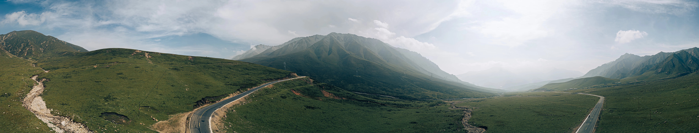

Ta'er Tample
EOS R5 | 42mm
EOS R5 | 42mm

Canon R5 | Panorama - 31mm | f/8

DJI Mini 3 Pro | 24mm | f/1.7

EOS R5 | 85mm
Canon R5 | Panorama - 42mm | f/4

DJI Mini 3 Pro | 24mm | f/1.7

Canon R5 | 24mm | f/4

Canon R5 | 24mm | f/4

DJI Mini 3 Pro | 24mm | f/1.7